| Link a repo. | Título | Descripción | Tecnologías/Habilidades | Estado |
|---|---|---|---|---|
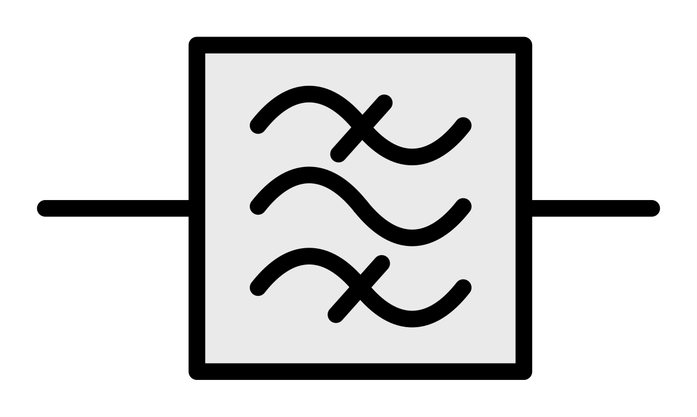 |
Filtro Activo | Análisis de transferencia, diseño de circuito y diseño e implementación del PCB de un filtro pasabandas. | 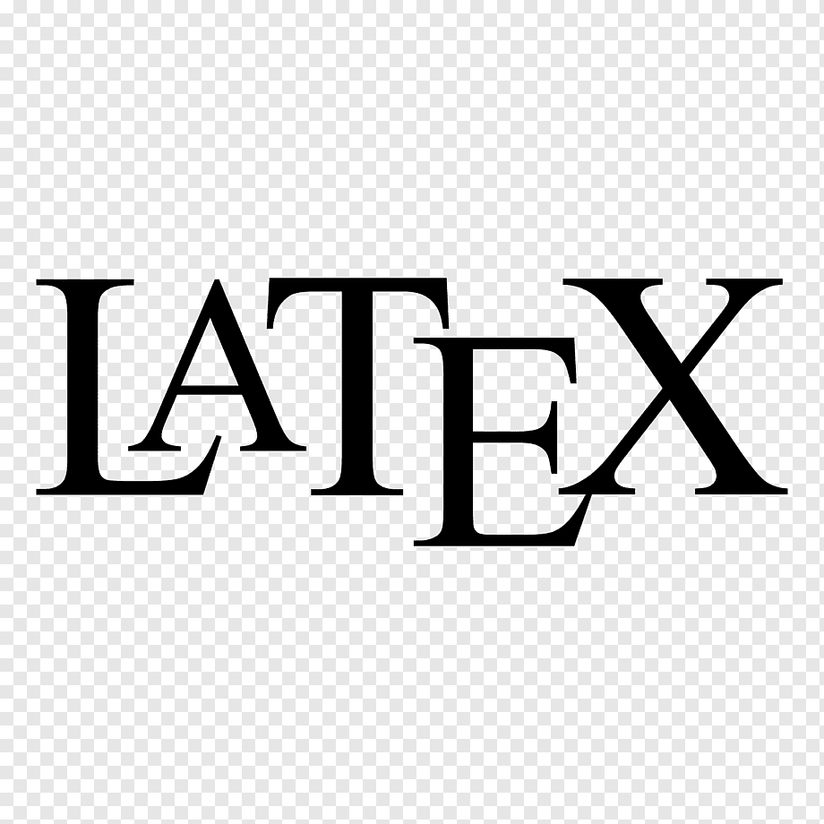 |
Concluido |
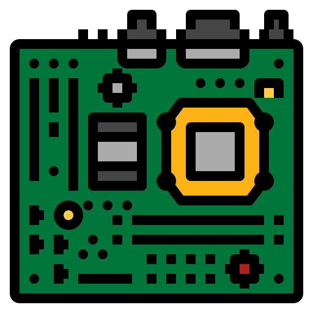 |
Fuente Conmutada + Fuente Lineal | Diseño y prototipado de Fuente Conmutada y Fuente Lineal. | Concluido |
|
| Control RF | Diseño de circuito, PCB, y carcasa en impresion 3D con ensamblado. | 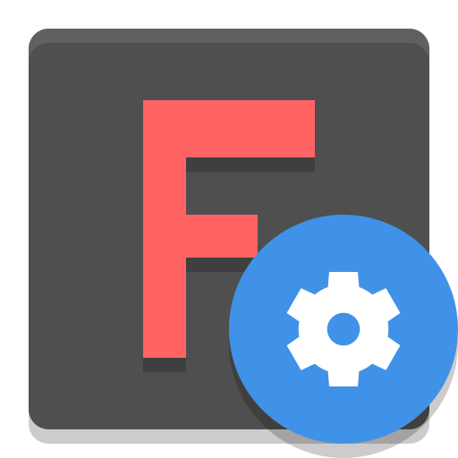 |
Concluido |
|
| Chat | Pequeño sistema de chat cliente servidor mediante sockets | 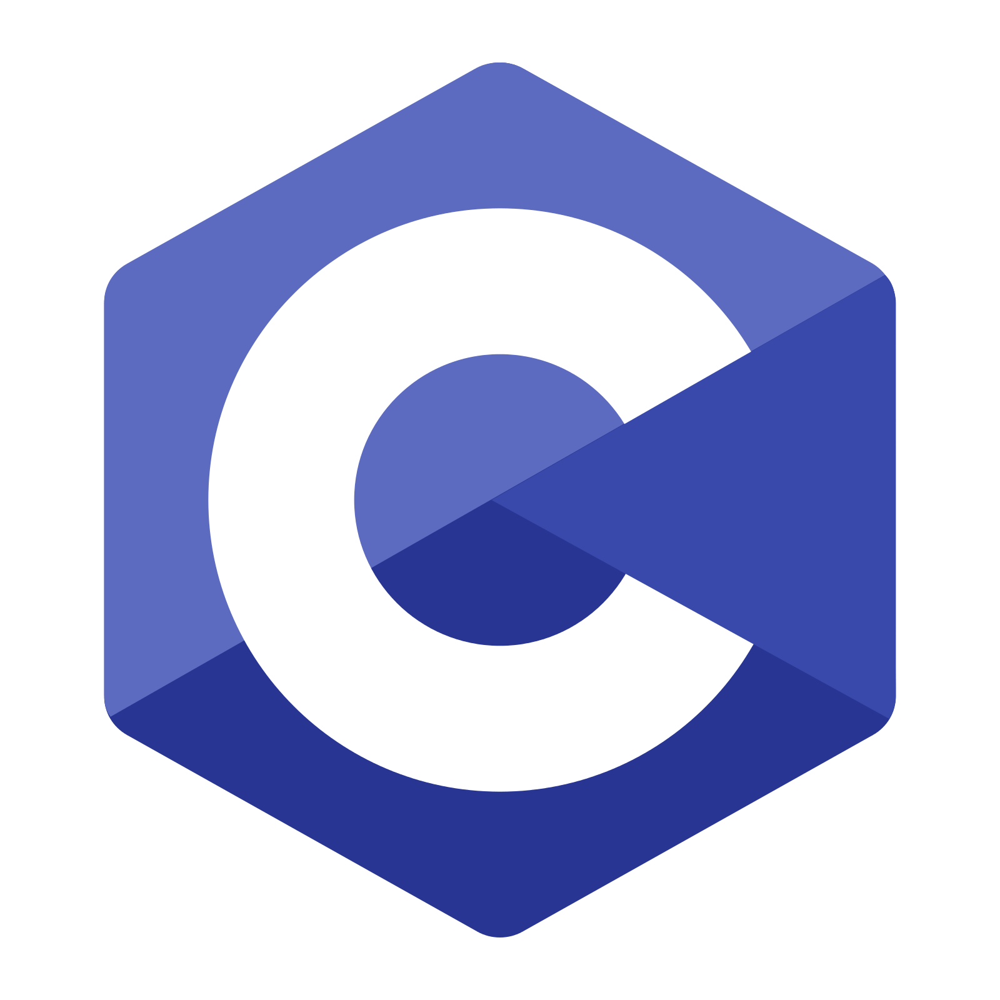 |
Concluido |
|
| Simulación de Sistema de Comunicacion Digital | Simulación en forma integral de un sistema de comunicaciones capaz de transmitir texto de un extremo a otro . | Concluido |
||
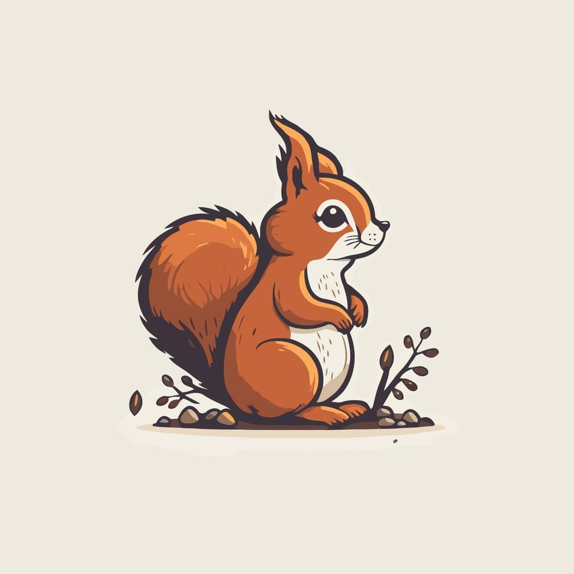 |
Servidor Ardilla | Servidor local de domótica/automatizacíon IoT | 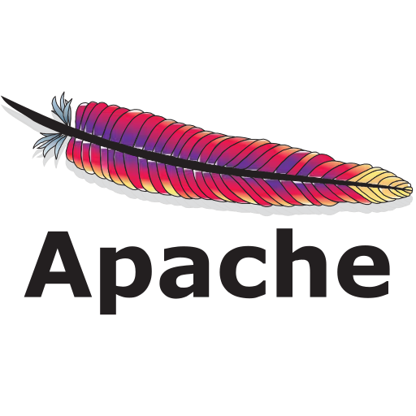 |
Trabajando |
| Juego Pokemon | Juego creado usando estructuras de datos propias en lenguaje C (TP). | 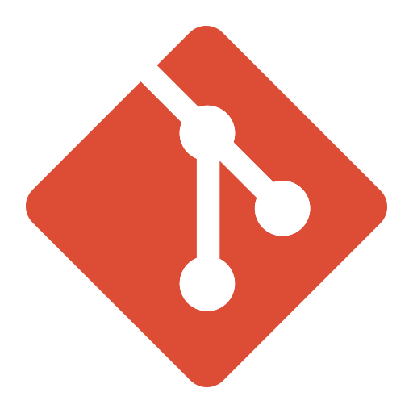 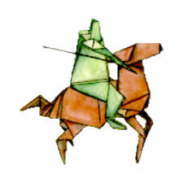 |
Concluido |
|
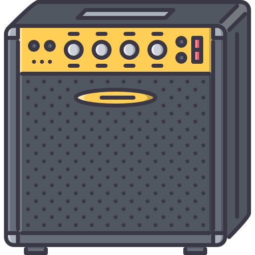 |
Taller de Audio | Desarrollo de amplificador | Estudio de amplificadores, filtros y mezcladores (entre otros). | Trabajando |
|
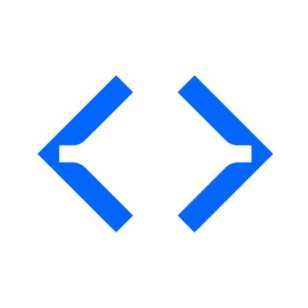 |
Diseño de placa de prácticas para Open PLC | Utilizando la placa Raspberry Pico 2 se adapta para realizar prácticas de programación de PLC mediante Open PLC, cuenta con entradas y salidas digitales y analógicas. | Concluido |